visión por computador · sjk002 · lección 005
Detección de contornos
Enlazar bordes, transformada de Hough, códigos de cadena y signaturas.
motivación
Los bordes salen rotos
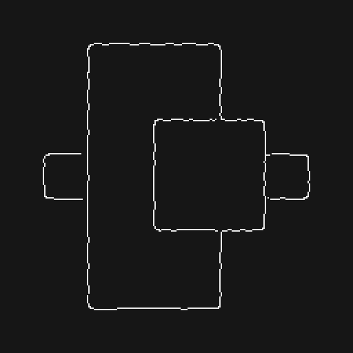
Un detector de bordes devuelve píxeles con huecos, ramas espurias y grosor irregular.
Para medir, reconocer o describir objetos queremos curvas y fronteras completas.
bloque 1 · procesamiento local
Enlace local
Unir cada píxel de borde con sus vecinos parecidos.
procesamiento local · idea
Enlace local: criterios
Magnitud y ángulo del gradiente en cada píxel:
El vecino \((s,t)\in S_{xy}\) se une a \((x,y)\) si cumple los dos criterios:
procesamiento local · tiempo real
Enlace local simplificado
Recorrer por filas y poner a 1 los huecos de ceros de longitud menor que \(L\) entre dos unos.
Girar \(g\) un ángulo \(\beta\), aplicar el paso 2 y deshacer el giro (\(-\beta\)).
procesamiento local · resultado
Enlace local: ejemplo real
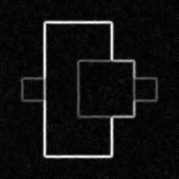
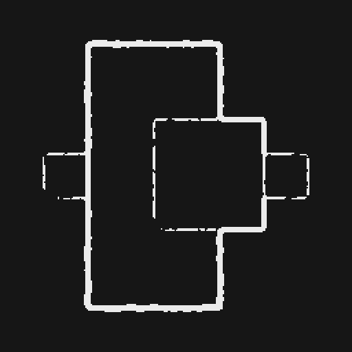
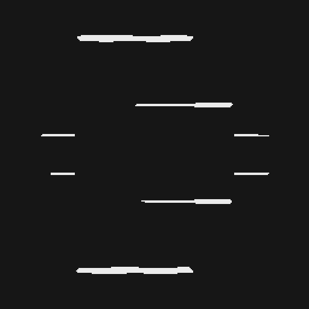
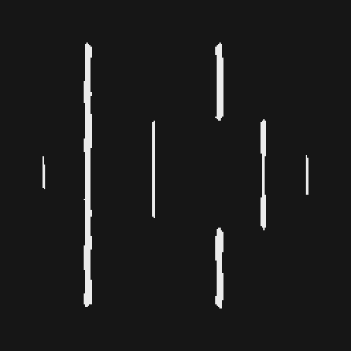
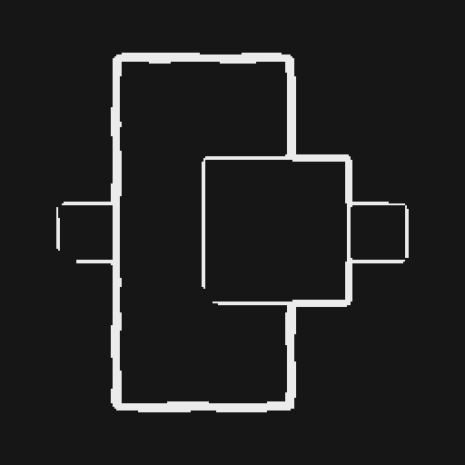
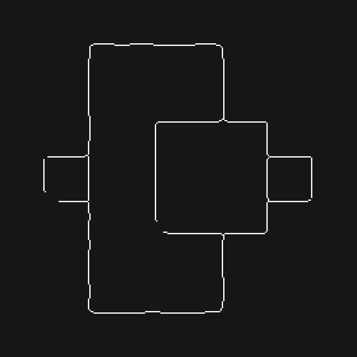
Parámetros de la lección: \(T_M=30\,\%\) de \(\max M\), \(A=90^\circ\), \(T_A=45^\circ\) y \(L\approx5\,\%\) del ancho \(W\).
Aquí \(W=256\Rightarrow L=13\). El enlace vertical es el mismo algoritmo con el mapa girado 90°.
Reproducción propia sobre cuadros.png con ruido gaussiano; la lección usa una furgoneta de 534×566.
bloque 2 · procesamiento global
Hough para rectas
Cada píxel vota; las rectas son los picos del acumulador.
procesamiento global · transformada de Hough
Hough: la idea
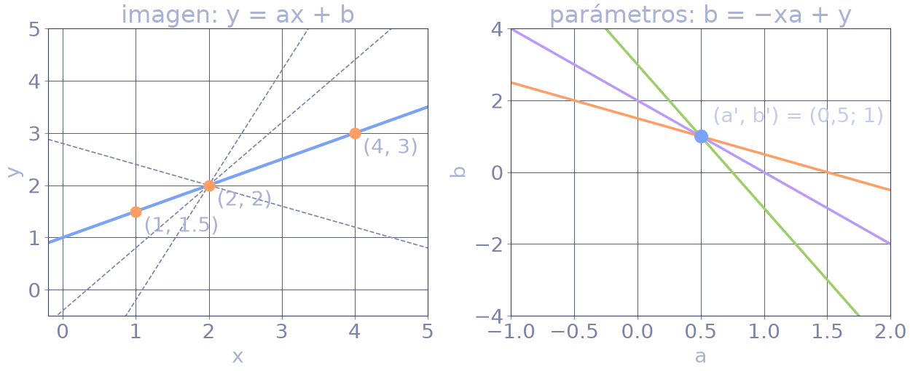
Cada punto \((x_i,y_i)\) vota por todas las rectas que pasan por él: en el espacio de parámetros \((a,b)\) es la recta \(b=-x_ia+y_i\). Las rectas de puntos colineales se cortan en \((a',b')\).
parametrización · problema
¿Por qué no y = ax + b?
La pendiente \(a=\tan\varphi\) tiende a \(\infty\) cuando la recta es vertical.
El acumulador necesitaría un rango infinito y una resolución muy desigual: casi toda la resolución se gastaría en ángulos cercanos a 90°.
parametrización · demostración
La forma normal de la recta
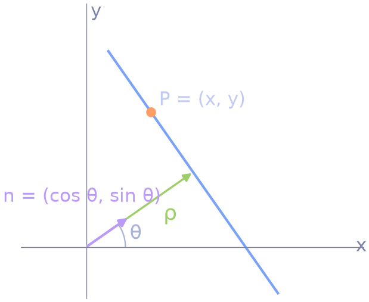
espacio de parámetros (θ, ρ)
Un punto es una sinusoide
algoritmo · versión directa
El acumulador: bucle
def hough_acum(bordes, thetas):
ys, xs = np.nonzero(bordes) # píxeles de borde
D = int(np.ceil(np.hypot(*bordes.shape)))
H = np.zeros((2*D + 1, len(thetas)), int) # filas ρ, columnas θ
for x, y in zip(xs, ys):
for t, th in enumerate(thetas):
rho = x*np.cos(th) + y*np.sin(th)
H[int(round(rho)) + D, t] += 1 # un voto
return H
algoritmo · NumPy
El acumulador: vectorizado
def hough_acum(bordes, thetas):
ys, xs = np.nonzero(bordes)
D = int(np.ceil(np.hypot(*bordes.shape)))
H = np.zeros((2*D + 1, len(thetas)), int)
rho = (np.outer(xs, np.cos(thetas))
+ np.outer(ys, np.sin(thetas))) # (N, T)
idx = np.round(rho).astype(int) + D
cols = np.tile(np.arange(len(thetas)), (len(xs), 1))
np.add.at(H, (idx, cols), 1) # suma repetidos
return H
| a, b | vectores de N y T elementos |
| retorna | matriz \(N\times T\) con \(a_i b_j\) |
H[idx, cols] += 1 pierde votos si hay índices repetidos; hace falta np.add.at (o np.bincount).enlazar bordes con Hough · lección, diapositiva 12
Algoritmo de Hough
1Mapa de bordes binario (Sobel + umbral o Canny).
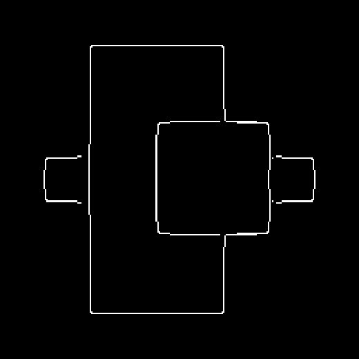
2Acumulador \(H(\rho,\theta)\): el espacio de Hough.
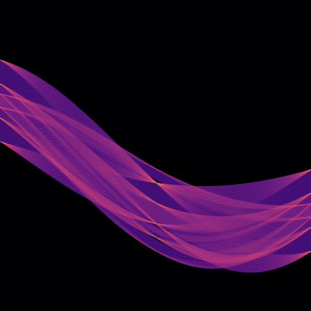
3Picos de \(H\): umbral y distancia mínima.
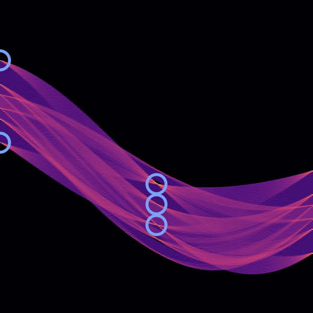
4Continuidad: unir huecos pequeños, quitar tramos cortos.
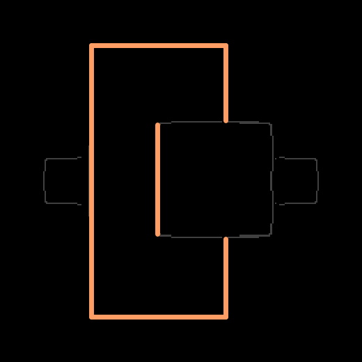
Resultado real con cuadros.png: 5 picos (umbral del 45 % del máximo) dan 6 segmentos; la recta vertical derecha se parte en dos porque el cuadrado interior corta el borde.
lab 4 · preguntas E3, E5 y E6
Funciones de skimage
| bordes | imagen binaria de bordes |
| theta | np.linspace(-np.pi/2, np.pi/2, 200), en radianes |
| H | acumulador, forma (len(rhos), len(thetas)) |
| rhos | de \(-D\) a \(D\), pasos de 1 píxel |
| threshold | mínimo de votos; por defecto \(0{,}5\max H\) |
| min_angle | separación mínima en nº de bins de θ (10) |
| min_distance | separación mínima en nº de bins de ρ (9) |
| num_peaks | máximo de picos (infinito) |
| retorna | votos, θ y ρ de cada pico |
# p4.py (Lab 4): 200 ángulos y picos al 15 % del máximo
H, thetas, rhos = hough_line(edges, np.linspace(-np.pi/2, np.pi/2, 200))
picos = hough_line_peaks(H, thetas, rhos, threshold=0.15*np.max(H),
min_angle=20, min_distance=15)
plt.imshow(np.log(H + 1)) # el log es solo para visualizar
ejemplo real · diapositiva 13 de la lección
Hough con cuadros.png
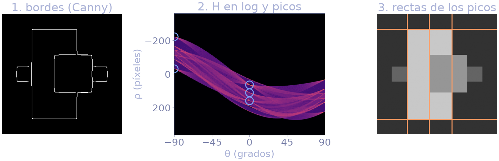
Resolución de 1 píxel en \(\rho\) y 1° en \(\theta\): \(H\) de \(727\times180\) con 994 píxeles de borde \(\Rightarrow\) 178 920 votos. Picos principales: \((\theta,\rho)=(0^\circ,64),(0^\circ,111),(0^\circ,159),(-90^\circ,-32),(-90^\circ,-223)\).
lab 4 · pregunta E6
Leer el espacio de Hough
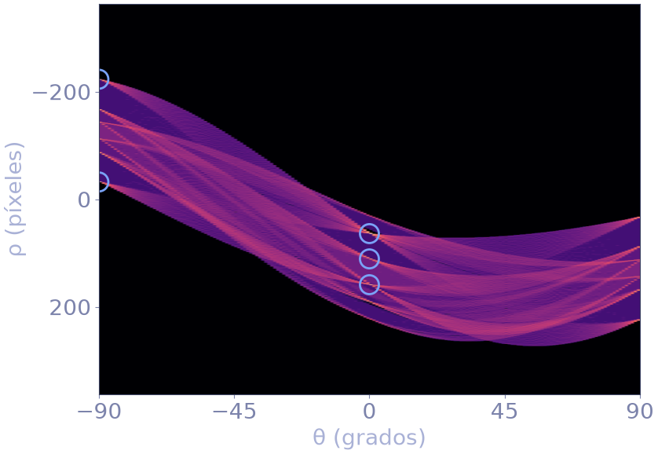
- Eje horizontal: \(\theta\); vertical: \(\rho\).
- Cada celda = nº de píxeles de borde de esa recta.
- Picos = rectas con muchos píxeles alineados.
- Mariposas alrededor de un pico: rectas casi iguales (θ y ρ vecinos) que recogen parte de los mismos píxeles.
- Paralelas: picos con la misma \(\theta\) y distinto \(\rho\).
- Borde izquierdo y derecho: \((-90^\circ,\rho)\) y \((90^\circ,-\rho)\) son la misma recta.
lab 4 · bRotate
Rotación y espacio de Hough
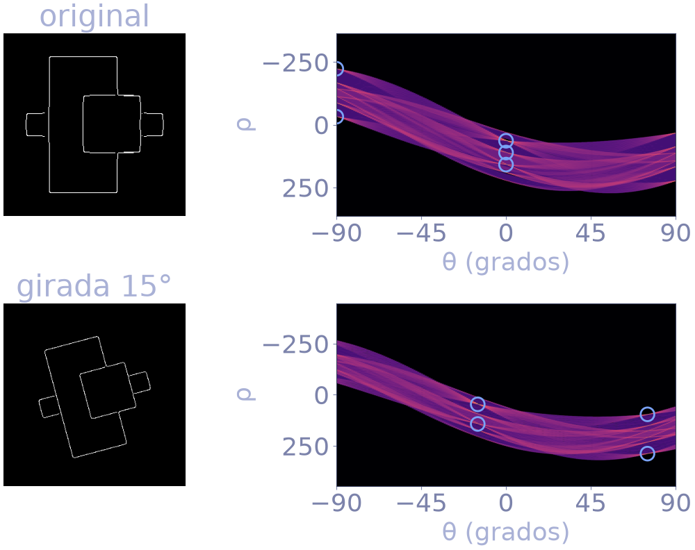
ndi.rotate: los picos pasan de \(0^\circ\) y \(-90^\circ\) a \(-15^\circ\) y \(75^\circ\). El signo depende del sentido de giro y del eje y hacia abajo.bloque 3 · más parámetros
Otras formas
Circunferencias, coste del acumulador y Hough generalizado.
Hough · otras primitivas
Hough para circunferencias
Tres parámetros \((a,b,r)\): el acumulador es 3D. Cada borde vota por un cono de círculos.
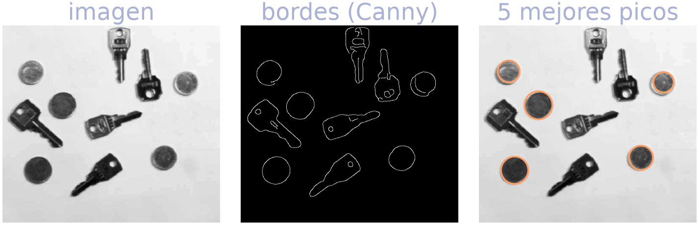
radios = np.arange(24, 40) Hc = hough_circle(bordes, radios) # forma (16, alto, ancho) acc, cx, cy, r = hough_circle_peaks(Hc, radios, total_num_peaks=5)
Hough · reducir el coste
Círculos con el gradiente
Sin gradiente, cada borde y cada \(r\) votan por todos los centros a distancia \(r\): una circunferencia en \((a,b)\).
El gradiente es radial: el centro está sobre su recta.
Hough · complejidad
Coste del acumulador
| forma | parámetros | celdas de H |
|---|---|---|
| recta | ρ, θ | nρ · nθ = 727 · 180 |
| circunferencia | a, b, r | 16 · 507 · 558 ≈ 4,5 M |
| elipse | a, b, ejes, ángulo (5) | producto de 5 resoluciones |
Tiempo de las rectas: \(N_{\text{bordes}}\times n_\theta\) votos (994 × 180 en cuadros).
Hough generalizado: formas arbitrarias descritas por una tabla; solo se cita.
bloque 4 · descriptores
Representar fronteras
Seguimiento, códigos de cadena, polígonos y signaturas.
boundary tracing · algoritmo de Moore
Seguimiento de fronteras
- b₀: primer 1 (arriba-izquierda). c₀: su vecino oeste, que es 0.
- Recorrer los 8 vecinos de b en sentido horario, empezando en c.
- El primer 1 es el nuevo b; el vecino anterior (un 0) es el nuevo c.
- Parar al volver a b₀ con el mismo siguiente píxel.
representación de fronteras
Código de cadena de Freeman
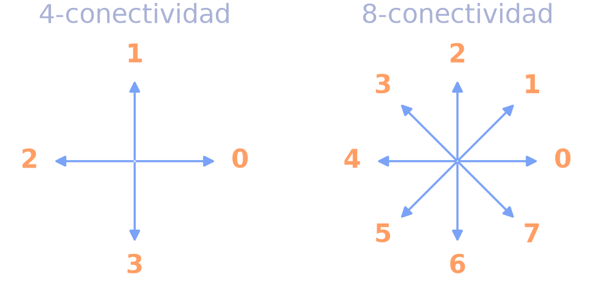
La frontera se guarda como el punto inicial y la secuencia de direcciones entre píxeles consecutivos.
4-conectividad: códigos 0–3. 8-conectividad: códigos 0–7.
ejemplo resuelto · 8-conectividad
Ejemplo: cadena a mano
Desde el 1 de arriba-izquierda, en sentido horario:
E, E, SE, S, SO, SO, NO, NO, N, NE: 10 píxeles, 10 códigos; el último cierra la curva.
D = {(0,1):0, (-1,1):1, (-1,0):2, (-1,-1):3,
(0,-1):4, (1,-1):5, (1,0):6, (1,1):7} # (Δfila, Δcol)
def cadena(p): # p: píxeles ordenados
n = len(p)
return [D[(p[(i+1)%n][0] - p[i][0],
p[(i+1)%n][1] - p[i][1])] for i in range(n)]
invariancias
Normalización de la cadena
a) punto de inicio
Rotar circularmente la secuencia hasta obtener el menor entero.
def normalizar(c):
return min(c[i:] + c[:i] for i in range(len(c)))b) rotación de la forma
Primera diferencia circular: cuántos giros de 45° antihorarios separan dos códigos.
def primera_dif(c):
n = len(c)
return [(c[(i+1) % n] - c[i]) % 8
for i in range(n)]Girar la forma \(k\cdot45^\circ\) suma \(k\) a todos los códigos: \((c_{i+1}+k)-(c_i+k)=c_{i+1}-c_i\). La diferencia no cambia.
ejemplo propio verificado en Python
Invariancias en la práctica
| caso | cadena | menor entero | 1.ª diferencia | dif. normalizada |
|---|---|---|---|---|
| original | 0076553321 | 0076553321 | 0777060777 | 0607770777 |
| inicio en otro píxel | 3321007655 | 0076553321 | 0777077706 | 0607770777 |
| forma girada 90° | 2210775543 | 0775543221 | 0777060777 | 0607770777 |
- Cambiar el inicio: lo arregla el menor entero (el segundo caso coincide con el primero).
- Girar la forma: el código cambia, pero la primera diferencia es la misma (tercer caso).
- Para ambas a la vez: diferencia primero y normalizar después (última columna idéntica).
lección, diapositiva 17
Ejemplo real de la lección
código de cadena de 8 direcciones (32 elementos)
menor entero: ya es el mínimo (empieza por 0000)
primera diferencia (circular)
La última (naranja) es el cierre: \((c_0-c_{31})\bmod 8=(0-2)\bmod8=6\).
6 = giro de 90° a la derecha, 2 = giro de 90° a la izquierda. Ventajas: ahorro de almacenamiento y análisis más fácil.
representar fronteras con pocos segmentos
Aproximación poligonal
Objetivo: capturar la esencia de la frontera con el mínimo número de segmentos.
Analogía de la goma elástica: la frontera queda dentro de una banda de celdas; una goma tensada dentro de la banda da el polígono de perímetro mínimo (MPP).
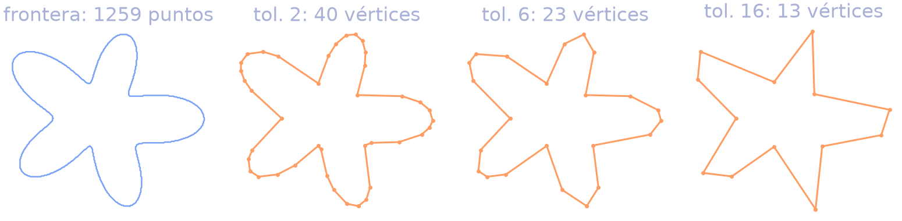
lección, diapositiva 19 · hoja de 566×566
MPP: vértices según S
| S (tamaño de celda) | N (vértices) |
|---|---|
| 2 | 206 |
| 4 | 127 |
| 8 | 92 |
| 16 | 66 |
| 32 | 32 |
| 64 | 13 |
Frontera 8-conectada original: 1900 puntos.
representación 1D de la frontera
Signaturas
Distancia del centroide \(C\) al punto de la frontera en el ángulo \(\theta\). Objetivo: una representación más simple de describir.
Círculo: \(r(\theta)=A\), constante.
Cuadrado de semilado \(A\): \(r(\theta)=A/\max(|\cos\theta|,|\sin\theta|)\), con mínimo \(A\) y picos \(\sqrt2A\) en las esquinas (45°, 135°, 225° y 315°).
lección, diapositiva 21 · emparejar forma y signatura
Signaturas: ¿A o B?
Cada pico de la signatura es una esquina de la forma: lejos del centroide.
Tres picos 3 → triángulo (forma A). Cuatro picos 4 → cuadrado (forma B).
para memorizar
Chuleta de contornos
| tema | qué recordar |
|---|---|
| enlace local | \(|M-M'|\le E\) y \(|\alpha-\alpha'|\le A\); versión rápida: umbral, rellenar huecos \(\lt L\) por filas, girar y repetir |
| recta normal | \(\rho=x\cos\theta+y\sin\theta\), \(\theta\in[-90^\circ,90^\circ)\), \(\rho\in[-D,D]\), \(D=\sqrt{H^2+W^2}\) |
| Hough rectas | punto = sinusoide; recta = pico; \(H\) tiene \((2D+1)\times n_\theta\) celdas; 3 colineales: sinusoides concurrentes |
| circunferencia | \((a,b,r)\): acumulador 3D; con gradiente \(a=x-r\cos\varphi\), \(b=y-r\sin\varphi\) |
| cadena de Freeman | 0 = este, antihorario; 8 códigos; inicio: menor entero; \(d_i=(c_{i+1}-c_i)\bmod8\) |
| signatura | \(r(\theta)\) desde el centroide: círculo constante, cuadrado con 4 picos \(\sqrt2A\) |
examen · verdadero o falso
V/F de práctica
| afirmación | respuesta | matiz |
|---|---|---|
| En Hough, un punto de la imagen es una recta en \((\rho,\theta)\). | Falso | Es una sinusoide. |
| La primera diferencia hace la cadena invariante a la rotación. | Verdadero | Para giros múltiplos de 45°. |
| La forma \(y=ax+b\) es la preferida en Hough. | Falso | La pendiente es infinita en verticales. |
| Los picos del acumulador indican rectas con muchos puntos. | Verdadero | Cada celda cuenta los píxeles de borde de esa recta. |
| Al girar la imagen \(\alpha\), \(\rho\) de los picos no cambia nunca. | Falso | Solo si se gira alrededor del origen; \(\theta\) sí cambia en \(\alpha\). |